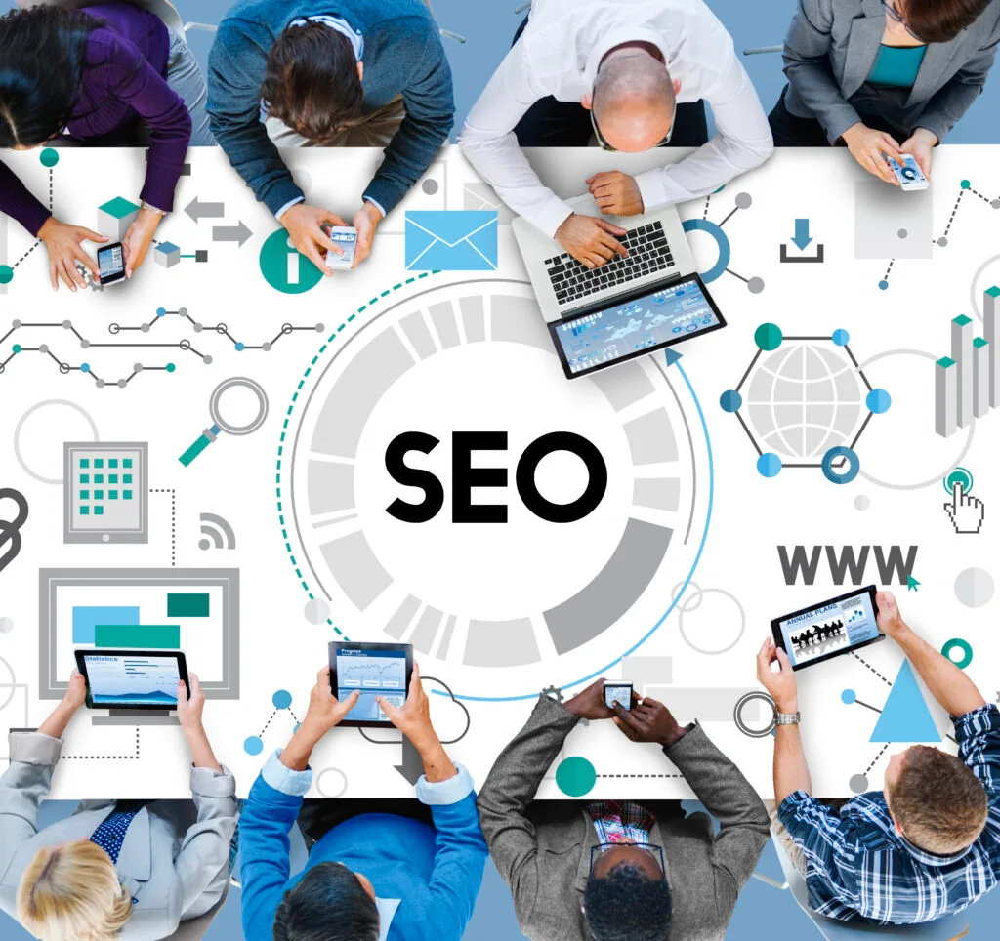

As a business owner, you know how important it is to have a strong brand. A strong brand can help you attract new customers, increase customer loyalty, and ultimately drive more sales. But how do you go about building and improving brand awareness? In this article, we’ll explore some key strategies for improving brand awareness and help you take your brand to the next level.
Define Your Brand
The first step in building a strong brand is to define what your brand is all about. This includes identifying your target audience, defining your unique selling proposition (USP), and establishing your brand’s core values. When you have a clear understanding of your brand, it’s much easier to create messaging and content that resonates with your target audience.
Create Compelling Content
Once you’ve defined your brand, it’s time to start creating content that will help you build brand awareness. This includes everything from blog posts and social media updates to white papers and case studies. When creating content, be sure to focus on your target audience and provide value. The key is to create content that is informative, engaging, and relevant to your target audience.
Leverage Social Media
Social media is one of the most powerful tools for building brand awareness. Not only does it allow you to reach a large audience, but it also allows you to engage with your target audience in real-time. Whether you’re using Facebook, Twitter, Instagram, or LinkedIn, be sure to post regularly and engage with your followers. You can also use paid social media advertising to reach even more people.
Optimize for SEO

Search engine optimization (SEO) is crucial for building brand awareness. By optimizing your website and content for search engines, you can increase your visibility and reach a larger audience. This includes keyword research, on-page optimization, and link building.
Host Events and Sponsorships
Hosting events and sponsorships is a great way to build brand awareness and connect with your target audience. Whether you’re hosting a networking event, a charity fundraiser, or a product launch, be sure to promote your event through social media, email marketing, and other channels.
Partner with Influencers
Influencer marketing is a powerful way to build brand awareness and reach a larger audience. By partnering with influencers in your industry, you can leverage their existing audience and reach new people. This can include social media influencers, bloggers, or industry thought leaders.
Measure and Analyze
Finally, it’s important to measure and analyze your brand awareness efforts. This includes tracking metrics like website traffic, social media engagement, and conversions. By analyzing this data, you can identify what’s working and what’s not, and make adjustments accordingly.
In conclusion, building and improving brand awareness is a key part of any marketing strategy. By following the tips outlined in this article, you can take your brand to the next level and reach a larger audience. Remember, building brand awareness takes time and effort, but the results are well worth it.
Conclusion
In conclusion, building and improving brand awareness is a key part of any marketing strategy. By taking the time to define your brand, creating compelling content, leveraging social media, optimizing for SEO, hosting events and sponsorships, partnering with influencers, and measuring and analyzing your efforts, you can effectively build and improve brand awareness for your business. Remember, building brand awareness takes time and effort, but the results are well worth it in the long run as it can help attract new customers, increase customer loyalty, and ultimately drive more sales.